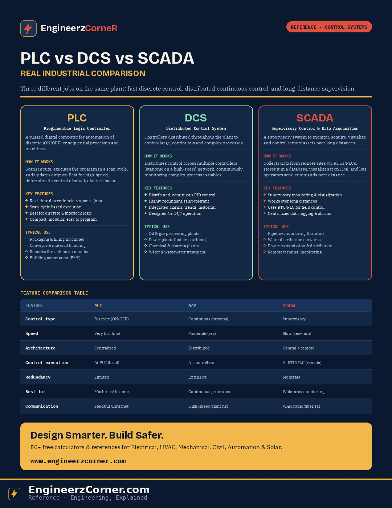

PLC, DCS and SCADA all show up in industrial control conversations, and the terms get used loosely enough that it's easy to lose track of what each one is actually for. The real distinction isn't "which is better" — it's where control execution happens, how fast it needs to run, and how far apart the equipment being controlled actually is.

PLC vs DCS vs SCADA — how each works, key features, and where each is actually used.
1. PLC — Programmable Logic Controller
A rugged digital computer used for automation of discrete (ON/OFF) or sequential processes and machines. It scans inputs, executes the program continuously in a scan cycle, and updates outputs — best for high-speed, deterministic control of small, discrete tasks.
| Key features | Typical applications |
|---|---|
| Real-time deterministic response (ms level); scan-cycle based execution; strong at discrete & interlock logic | Packaging & filling machines; conveyor systems; material handling |
| High-speed response, compact and modular, easy to program | Robotics & machine automation; HVAC systems |
| High reliability in harsh environments; supports multiple I/O modules & comms protocols | Building automation (BMS); small pumping & booster systems |
2. DCS — Distributed Control System
A control system where controllers are distributed throughout the plant to control large, continuous and complex processes. It distributes control across multiple controllers (stations) connected over a high-speed network, continuously monitoring and controlling complex process variables.
| Key features | Typical applications |
|---|---|
| Distributed process control; continuous PID-based control; highly redundant & fault-tolerant architecture | Oil & gas processing plants; refineries & petrochemicals |
| Integrated alarms, trends & historian; handles large I/O and complex processes | Power plants (boilers, turbines); chemical & pharmaceutical plants |
| Advanced control, recipes & batch control; designed for 24/7 continuous operation; centralized engineering, decentralized control | Water & wastewater treatment plants; pulp & paper; large continuous process industries |
3. SCADA — Supervisory Control and Data Acquisition
A supervisory system used to monitor, acquire, visualize and control remote assets over long distances. SCADA collects data from remote sites using RTUs/PLCs, stores it in a database, visualizes it on HMI, and allows operators to send commands over long distances — it doesn't execute direct control logic itself.
| Key features | Typical applications |
|---|---|
| Supervisory monitoring; data acquisition & visualization; works over long distances | Pipeline monitoring & control; water distribution networks |
| Uses RTU/PLC for field control — no direct control logic execution at the master station | Power transmission & distribution; remote terminal monitoring |
| Centralized data logging & reporting; event & alarm management; comms over WAN, LAN, radio, fiber, satellite | Oil & gas wellhead monitoring; environmental monitoring; traffic & smart city systems |
Feature comparison table
| Feature | PLC | DCS | SCADA |
|---|---|---|---|
| Control type | Discrete (ON/OFF, sequential) | Continuous (process control) | Supervisory (monitoring & control) |
| Speed | Very fast (ms) | Moderate (sec) | Slow (sec to min) |
| Architecture | Centralized (single controller) | Distributed (multiple controllers) | Central + remote (hierarchical) |
| Control execution | At PLC (local) | At controllers (distributed) | At RTU/PLC (remote sites) |
| Redundancy | Limited (if configured) | Extensive (high availability) | Moderate (depends on design) |
| Best for | Machines & discrete processes | Large continuous processes | Wide area monitoring & control |
| Data handling | Limited (local) | High (real-time + historian) | Very high (long-term historian) |
| Communication | Fieldbus, Ethernet, serial | High-speed plant network | WAN, LAN, radio, fiber, satellite |
| Operator interface | HMI (local) | HMI/SCADA (centralized) | SCADA/HMI (centralized) |
| Example | Conveyor control | Reactor temperature control | Pipeline pressure monitoring |
Key takeaways
- ✓PLC is optimized for speed and determinism at the machine level — millisecond scan cycles, discrete and sequential logic.
- ✓DCS is optimized for continuous, plant-wide process control — distributed controllers, heavy redundancy, integrated historian and batch/recipe management.
- ✓SCADA is optimized for supervision across distance — monitoring, visualization and command over WAN/radio/fiber, with control execution left to the RTU/PLC at each remote site.
- ✓Most real industrial systems combine all three rather than picking one — the question is which layer a given piece of equipment or process belongs in, not which system "wins."